THE CLIENT CODEBASE
ALFRED SIMON
EVERYONE IN THIS ROOM GOT THIS EMAIL THIS MONTH
ONE METRIC: WHEN DOES THE CLIENT GET THE ANSWER?
THE OLD WAY
THE OLD WAY
THE AGENTIC WAY
- Increase CPC by 12% on branded
- Add the competitor to the monitoring list
- Shift saved budget to the top Performance Max asset group
THE GOAL
THE GOAL
NOT MAGIC. AN ENGINE.
THE AGENT IS 15% OF THE WORK.
THIS IS WHAT THE OTHER 70% BUYS YOU.
EVERY CLIENT IS A CODEBASE
THE DATABASE
YOUR DATA IS BUILT FOR HUMAN WORK
Demo Bikes
- ads/ · accounts + performance
- shop/ · orders, margins
- comms/ · email + Slack, auto-routed
- meetings/ · notes + decisions
- context.md · who they are, what matters
Agent
Demo Bikes
- ads/ · accounts + performance
- shop/ · orders, margins
- comms/ · email + Slack, auto-routed
- meetings/ · notes + decisions
- context.md · who they are, what matters
Agent
One folder per client
Slack, meeting notes, ads data, changelog. All landing here automatically. Not a quarterly cleanup weekend.
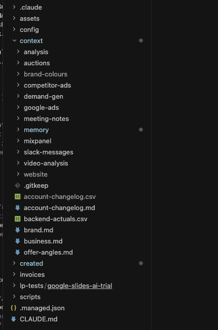
CONNECTING GOOGLE ADS IS NOT ENOUGH ANYMORE
THE BACKEND
Tools
How the agent reaches the database, what it may change, what external sources it can use
The Moat
Does it write an RSA to YOUR standards, does it analyse performance in YOUR order
Business
What does THIS client need, what goal are we driving toward
One task, one file: the RSA writer
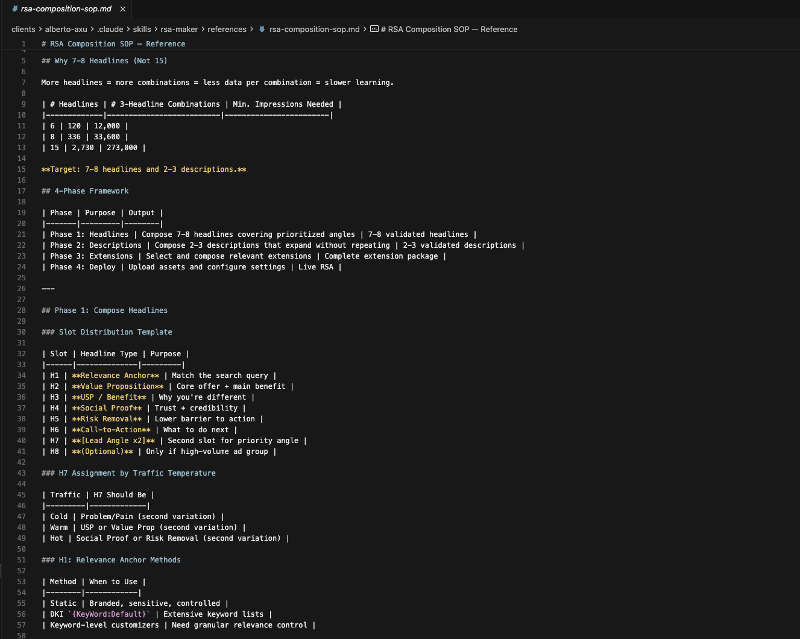
Your standards, in writing
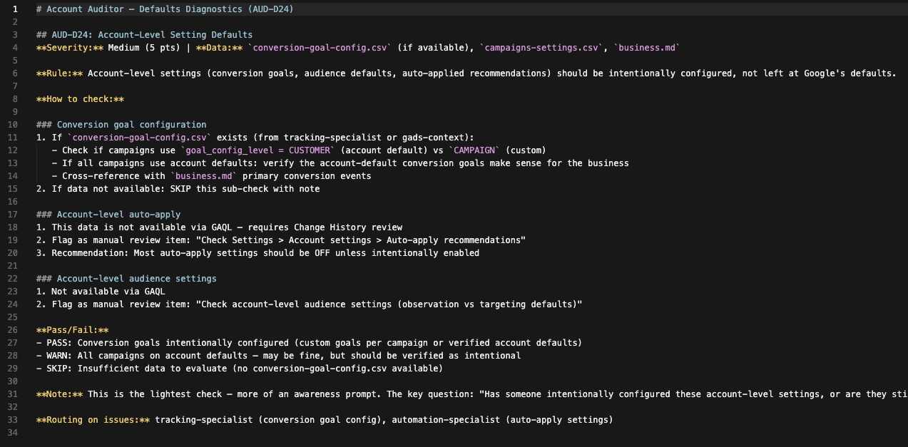

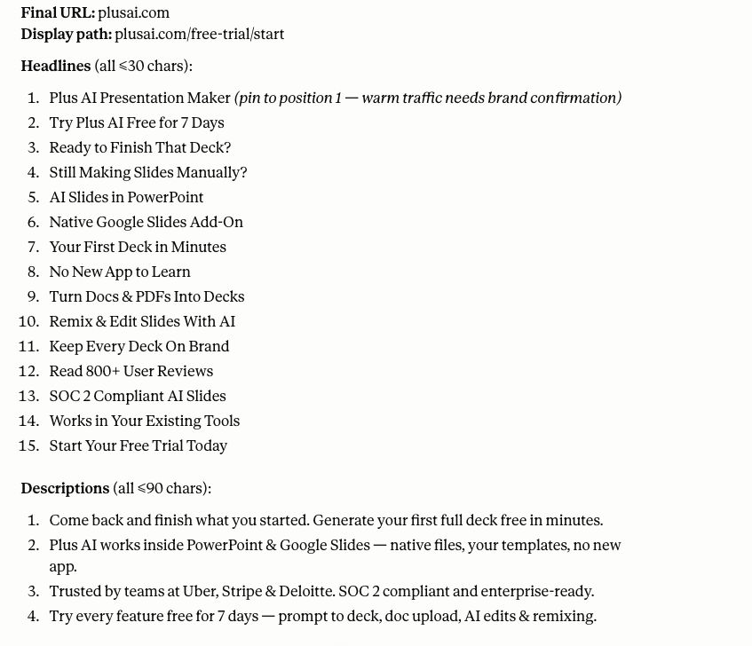
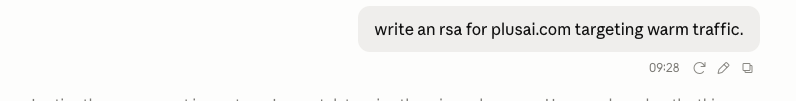
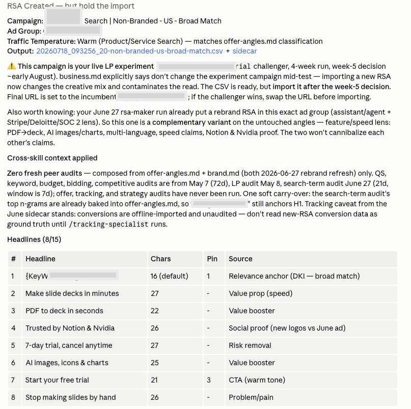
THE SECURITY
WOULD YOU LET AN AGENT PUSH CHANGES ALONE?
NO. AND YOU NEVER HAVE TO.
THE PIPELINE · THE AGENT'S HALF
The machine artifact
JSON, boring, readable by code. Boring is the feature: from this point on, nothing creative is allowed to happen.
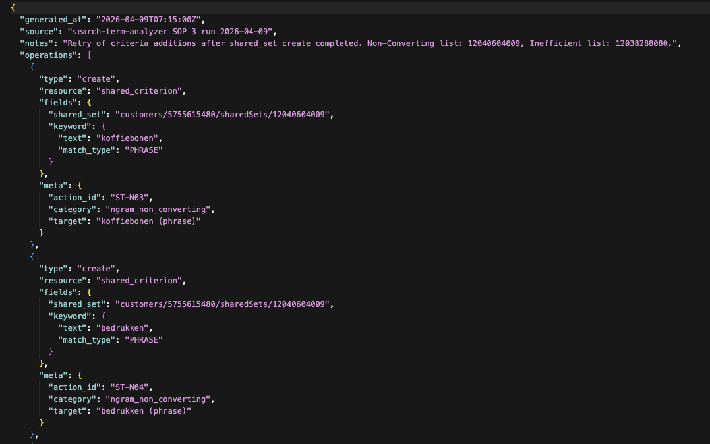
THE PIPELINE · THE CODE'S HALF
THE AGENT PROPOSES. CODE ENFORCES. YOU DECIDE.
THE FRONTEND
THE FRONTEND IS JUST A WINDOW
The editor
Cursor or Claude Code. PPC OS in its natural habitat: markdown files and an agent.
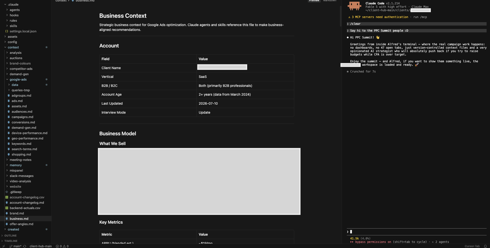
The Slack window
Tag the agent like a colleague, it answers in the thread. Claude Tag, straight from Anthropic. Same engine underneath.
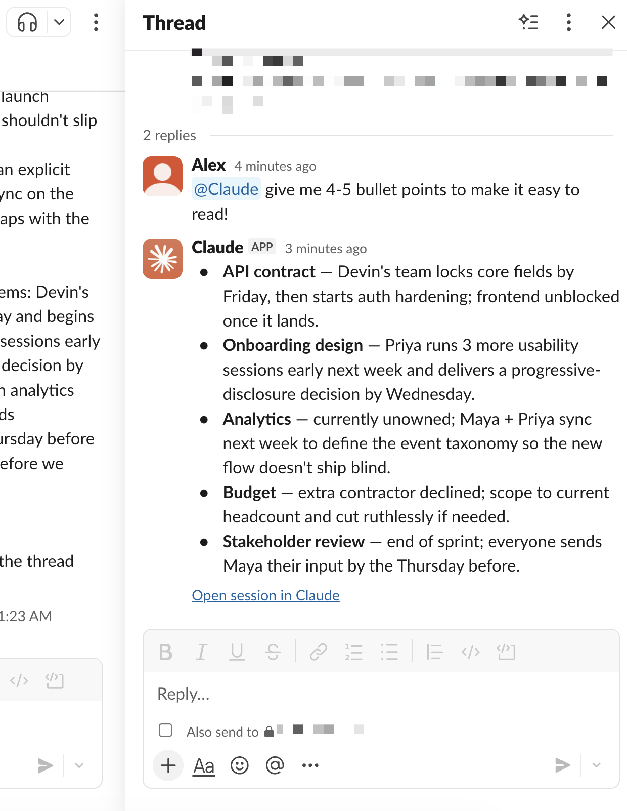
THE AUTH
TECHNOLOGY, OR A DISGRUNTLED FOUR-YEAR-OLD?
Ready-made, off the shelf
Google's own picture: a gateway in front of your agents. Permissions, rate limits, threat protection. Every action logged.
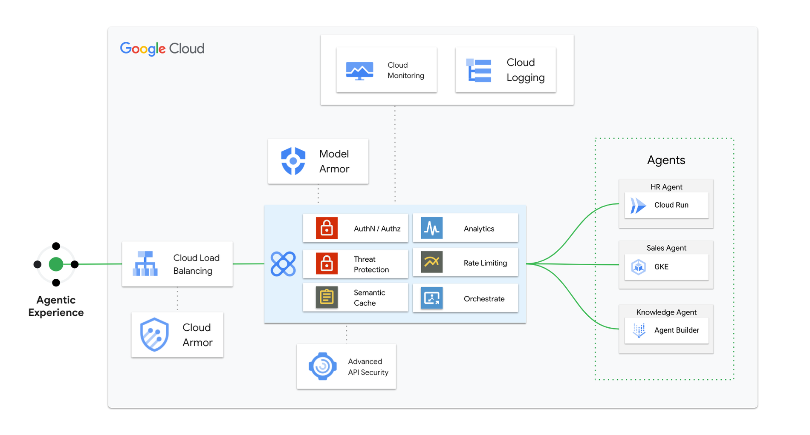
THE GIT
THE MEMORY OF A CLIENT
The raw changelog
Dated entries, who did it, agent or human. Deliberately boring. This exists today, it's not a slideware promise.
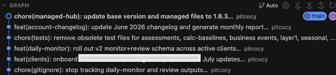